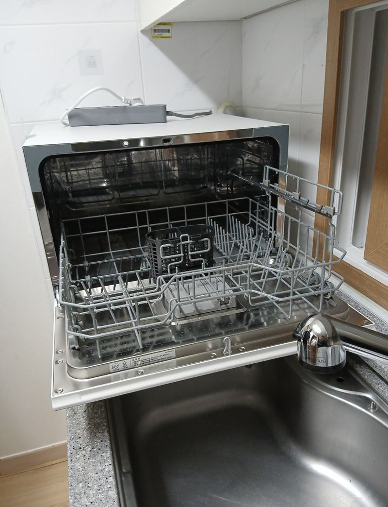
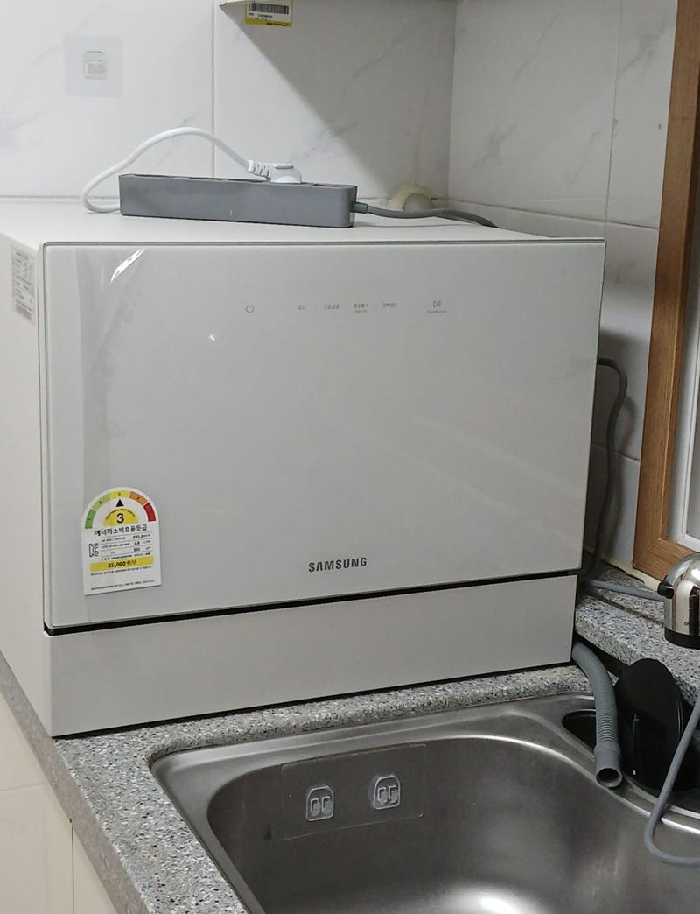
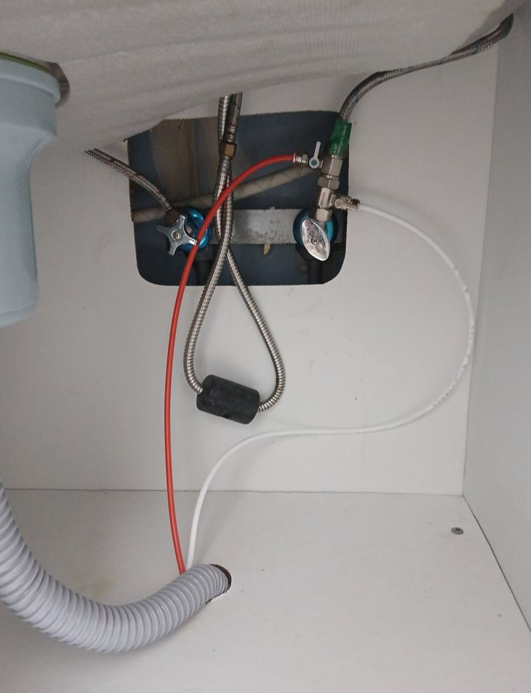
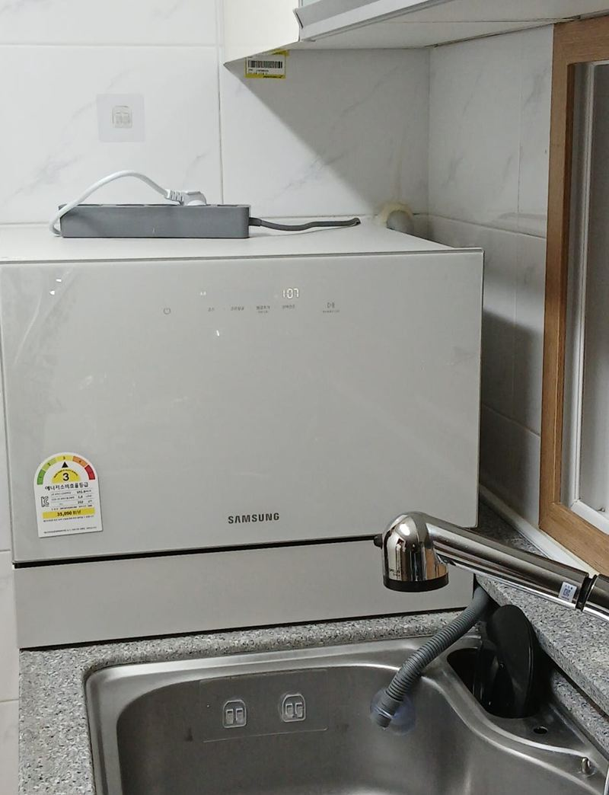
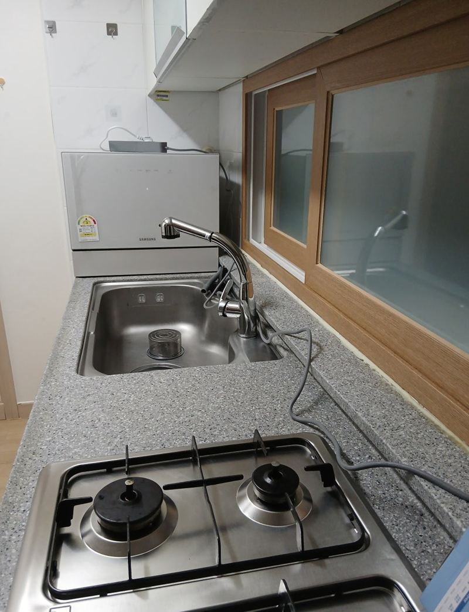

경기광주 오포 빌라 무타공 식기세척기 설치
← 밀어서 전후 비교 →
경기광주 오포읍 빌라 입주를 앞둔 고객분이었어요. 6인용 스탠드형 식기세척기를 샀는데, 월세라 싱크대 상판에 구멍을 내는 게 부담된다고 하셨어요. 나갈 때 원상복구 문제가 생길까 걱정이었어요. 주방 급수·배수 라인을 먼저 확인하고, 상판을 뚫지 않고 기존 배관에 연결하는 무타공 방식으로 식세기를 앉힌 뒤 호스를 정리하고 시험 가동으로 누수를 확인했어요.
| 현장 | 경기광주 오포읍 빌라 주방, 입주 전 |
|---|---|
| 제품 | 6인용 스탠드형 식기세척기 |
| 한 일 | 주방 구조·급배수 라인 확인 → 원하는 자리에 세척기 배치 → 무타공 급수 연결 → 배수 연결 → 호스 정리 → 전원 연결·시험 가동 |
| 조건 | 월세, 상판 타공 없이 원상복구 가능하게 |
무타공 설치는 무엇이 다를까
보통 식기세척기를 달 때는 싱크대 상판에 구멍을 뚫어 급수·배수 호스를 아래로 내려요. 무타공은 구멍을 내지 않고 기존 수전과 배수구 쪽 배관에 바로 이어요. 집에 손상이 남지 않아서 월세·전세, 원룸, 오피스텔처럼 이사가 잦은 집에서 많이 골라요.
- 원상복구가 쉬워요나갈 때 호스만 빼면 원래 상태예요.
- 공사가 간단해요구멍 뚫는 단계가 빠져 금방 끝나요.
- 상판이 안전해요구멍이 없으니 상판이 갈라지거나 그 틈으로 물이 샐 일이 줄어요.
- 자리를 고를 수 있어요호스가 닿는 범위에서 원하는 곳에 둘 수 있어요.


스탠드 식세기 연결 순서
구조 확인
빌라 주방 구조와 급수·배수 라인이 어디로 지나가는지 먼저 봤어요.
자리 잡기
고객분이 원하는 자리, 싱크볼 옆 상판에 세척기를 놓고 수평을 맞췄어요.

급수·배수 연결
싱크대 아래 기존 배관에 분기해 급수를 잇고, 배수 호스를 배수구에 연결했어요.

호스 정리와 시험
호스가 동선을 막거나 꺾이지 않게 정리하고, 전원을 연결해 돌려 보며 누수와 동작을 확인했어요.


고객분이 과정을 직접 지켜보셨고, "월세라 구멍 뚫는 게 부담됐는데 원래 상태 그대로 설치할 수 있어 마음이 놓인다, 금방 끝나고 깔끔하다"고 하셨어요.
식세기 용량 고르기
1~2인 가구라면 6인용으로도 충분해요. 4인 이상 가족이라면 8~12인용이 효율적이에요. 다만 큰 제품은 상판 위에 두기 어렵고, 하부장 매립이 필요할 수 있어요. 놓을 자리 폭과 깊이, 위쪽 상부장까지 높이를 재 보고 고르면 실패가 적어요.
무타공이라도 물은 기존 배관으로 오가니 배수구와 필터 청소는 꾸준히 해 주세요. 호스가 꺾이거나 눌리면 새기 쉬우니 가끔 연결부를 확인해 주시면 좋아요.
설치 전에 알려 주시면 좋은 것
세척기 모델명과 놓을 자리 사진, 싱크대 아래 수전·배수구 사진이 있으면 필요한 부속을 미리 챙겨 갈 수 있어요. 수전이 벽에서 나오는지 상판에 달렸는지에 따라 쓰는 부속이 달라져요.
콘센트 위치도 함께 봐 주세요. 세척기 전원선이 닿지 않으면 멀티탭을 길게 끌어와야 하는데, 물 쓰는 자리라 되도록 피하는 게 좋아요.
무타공 식기세척기 질문
수전이 벽에서 나오는 집도 되나요?
벽 수전도 분기 부속으로 연결할 수 있어요. 수전 사진을 보내 주세요.
상판 위 자리가 좁아요.
세척기 크기와 상판 깊이를 재 보고, 안 되면 다른 자리를 같이 찾아요.
배수가 느리면 어떻게 해요?
배수 호스 높이와 경사를 다시 맞추면 나아지는 경우가 많아요.
세척기 소음이 걱정돼요.
상판 위에 평평하게 앉히고 진동 패드를 두면 소리가 줄어요.
이사 갈 때 직접 떼도 되나요?
밸브를 잠그고 호스를 빼면 돼요. 분기 부속은 원래 부품으로 돌려 두세요.
호스가 바닥에 늘어지지 않을까요?
상판 뒤쪽과 싱크대 안으로 길을 잡아 정리해요. 눈에 보이는 부분은 최대한 줄여요.
세척기 아래 물받이가 필요한가요?
상판 위에 두는 스탠드형은 아래에 얇은 받침을 깔아 두면 물기와 진동을 줄일 수 있어요.
6인용으로 큰 냄비도 씻기나요?
큰 냄비는 들어가기 어려워요. 그릇과 컵, 작은 냄비 위주로 쓰기 좋아요.
다른 식기세척기 현장
세척기 모델과 놓을 자리, 싱크대 아래 사진을 보내 주세요.
전화 상담 010-4517-9872